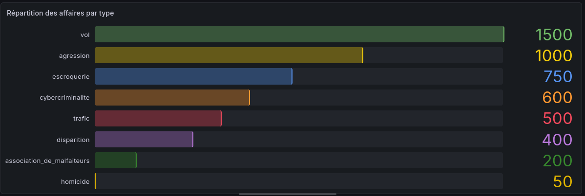
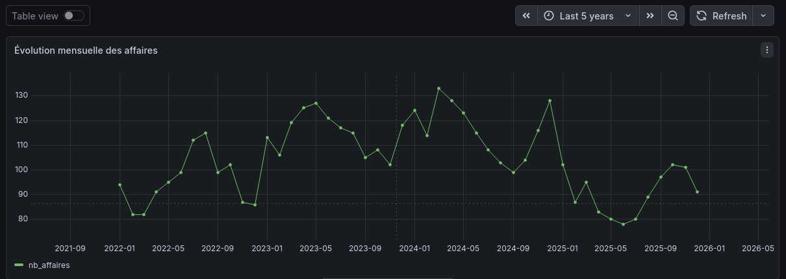
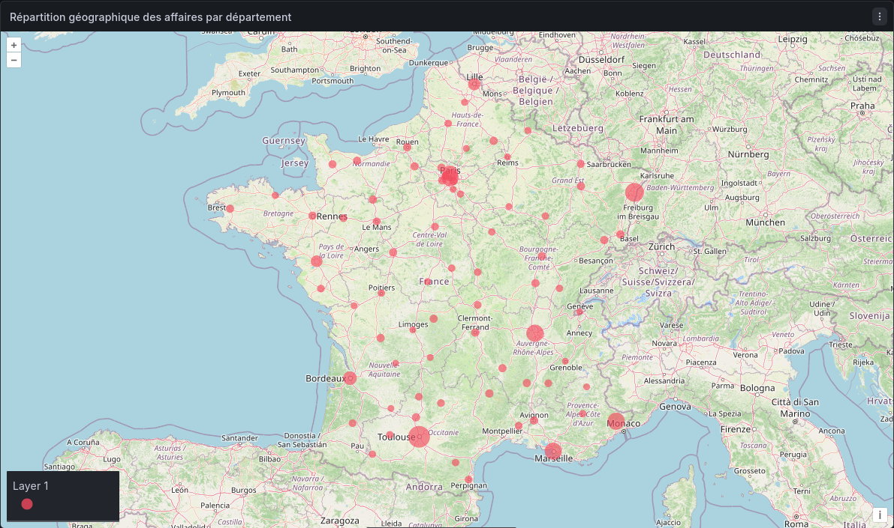

Université
Bachelor Universitaire et technologique | BUT informatique
Sorbonne Paris Nord
Étudiant en BUT Informatique à Sorbonne Paris Nord, je suis passionné par le développement web, les bases de données et l'intelligence artificielle. J'aime concevoir des projets techniques concrets et apprendre en continu de nouvelles technologies.
En parallèle de ma formation, je développe mes compétences en programmation, modélisation de données et machine learning à travers des projets variés. Passionné également par les voyages, j'aspire à allier un jour l'informatique et la découverte du monde.
Après deux années consacrées à la réalisation de projets informatiques académiques et personnels, je souhaite aujourd'hui rejoindre une entreprise en alternance pour mettre mes acquis en application et progresser au contact d'une équipe.
Bachelor Universitaire et technologique | BUT informatique
Sorbonne Paris Nord
Stage dans une entreprise
specialisé dans l'imobilier et la construction.
Bacalaureat Scientifique
Specialitées : Maths | Physique-chimie
Mention: Bien
Exploitation et visualisation d’une base de données PostgreSQL modélisant l’activité d’une brigade criminelle,
composée de 5 000 affaires réparties sur 6 tables relationnelles
(affaires, agents, individus, pièces à conviction, départements).
Rédaction de requêtes SQL avancées (jointures multi-tables, agrégations avec FILTER, sous-requêtes imbriquées, vues),
conception d’un tableau de bord Grafana à 5 panels (indicateur clé, bar chart, série temporelle, table, carte Geomap de la France),
et mise en place de sauvegardes logiques via pg_dump.
Compétences : PostgreSQL | SQL avancé | Grafana | Linux
Modélisation relationnelle | Visualisation de données
Conception et implémentation en PostgreSQL d’une base de données dédiée au rapportage de la qualité des eaux de baignade pour la saison 2024.
Rédaction du script SQL de création des tables, modélisation via un Atelier de Génie Logiciel et peuplement
des données à partir de fichiers CSV officiels à l’aide de tables
temporaires et de requêtes de projection, dans le cadre d’un travail d’intégration et de structuration des données.
Compétences : PostgreSQL | SQL | Modélisation de bases de données | Manipulation de données
 →
→
Apprentissage des bases du Machine Learning, incluant l’étude des différentes méthodes de
régression et de l’algorithme de Gradient Descent pour l’optimisation des modèles.
Ce travail s’accompagne de la manipulation de données, de leur visualisation avec Matplotlib et de leur
traitement numérique avec NumPy, afin de comprendre les mécanismes fondamentaux de l’entraînement et de l’évaluation des modèles prédictifs.
Compétences : Python | Machine Learning | Régression | Optimisation (Gradient Descent) Analyse de données
NumPy | Matplotlib

Volume des affaires par catégorie : vol, agression, escroquerie, cybercriminalité… 5 000 dossiers au total.

Nombre d'affaires mois par mois sur plusieurs années, avec détection des pics d'activité.

Visualisation géographique sur Grafana, la taille des cercles est proportionnelle au nombre d'affaires.
Vous avez un conseil ou une question ? N’hésitez pas à me contacter !
Voir mon CV


Email : zyad.abouelela@icloud.com
Téléphone : +33 6 58 61 51 51
LinkedIn : linkedin.com/in/zyad